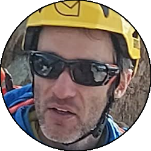

Relazione
| Data Uscita | 02-07-2023, Domenica | Area | Disgrazia |
|---|---|---|---|
| Luogo di Partenza | Chiareggio - Chiesa in Valmalenco (SO) | Quota |
1600m la partenza 2845m il bivacco Taveggia 3151m il bivacco Oggioni 3678m la cima |
| Dislivello | 2300m (circa) | Tempi | 17:00 ore (06:00 ore la via) |
| Esposizione | Nord-Est, Nord | Difficoltà Tecnica | III+, 50° |
| Punti di Appoggio | Rifugio Porro, Rifugio Ventina, Bivacco Taveggia, Bivacco Oggioni, Bivacco Rauzi, Rifugio Ponti | Acqua | Diversi fiumi in val Ventina, poi solo acqua di scioglimento fino alla cima e su buona parte della discesa |
| Partecipanti |
 Daniele F,
 Oracolo, Oracolo,
 Papa, Papa,
 Ste Ste
|
||
(clicca sull'immagine per scarica la traccia GPS)
Accesso
Da Lecco prendere la SS36 in direzione Valtellina, e a colico imboccare quest'ultima raggiungendo Sondrio. Da Sondrio salire in Val Malenco e all'altezza di chiesa portarsi verso Nord-Ovest (sinistra) sulla strada che passando da San Giuseppe arriva fino a Chiareggio (accesso al paese a pagamento). Parcheggiare la macchina nei parcheggi a inizio paese.
Avvicinamento
Dal paese scendere verso il fiume, superarlo tramite comodo ponte e salire per comoda strada fino al rifugio Porro. Proseguire verso Sud nella piana superando anche il rifugio Ventina, e salire il sentiero che alterna gande a pietraie, fino alla lingua finale del ghiacciaio del Ventina.
Salire il ghiacciaio facendo attenzione a eventuali crepacci, tenendo tendenzialmente la destra sotto la bastionata rocciosa. Arrivati dove la bastionata finisce, individuare un canalino che porta su un altopiano roccioso sotto al ghiacciaio del Disgrazia. Scendere sul ghiacciaio scegliendo il percorso migliore (solitamente a sinistra, ma non è obbligato), e traversare a mezza costa sotto i seracchi cercando di non abbassarsi troppo, fino a raggiungere le rocce basali dello sperone su cui sorge già il bivacco Taveggia (visibile con un po' di attenzione). Salire le roccette (II) seguendo il percorso più logico e i radi ometti, fino a giungere alla comoda piazzola su cui sorge il bivacco
Proseguire lasciando il bivacco a sinistra arrivando sulle rocce che sovrastano il ghiacciaio della Vergine. Da qui abbassarsi fino al ghiacciaio (o con un canaletto sulla sinistra o tramite un pendio un po' marcio sulla destra, valutare le condizioni in loco) per poi percorrerlo con un deciso traverso sotto la Punta Kennedy, puntando all'evidente largo canalone. Arrivati nel canalone salirlo faticosamente su neve ripida (attenzione in caso di ghiaccio) con pendenze sostenute, tenendo tendenzialmente la sinistra per evitare i punti più delicati. Una volta scollinato il canale si è sull'altopiano glaciale tra Punta Kennedy, Corda Molla e Pizzo Ventina, e al colletto del Disgrazia di fronte a noi è ben visibile il comodo bivacco Oggioni.
Via
Dal bivacco portarsi verso il colletto della Kennedy (Sud) superando la terminale e poi percorrendo la crestina che porta sulla cresta vera e propria. Si inizia superando dei facili passaggi su roccia, dove bisogna cercare di tenere il più possibile il filo di cresta ed eventualmente se bisogna abbandonarlo si rimane lato Ventina (sinistra), anche se non è una regola fissa, comunque la via è molto logica. Le difficoltà su questo tratto rimangono sempre fino al III, nonostante magari l'esposizione sia forte, e una cordata capace può proseguire in conserva protetta.
La parte centrale della cresta è quella che oppone le difficoltà maggiori in roccia (comunque senza mai raggiungere il IV grado), di particolare importanza un passaggio molto esposto da fare in discesa fino a una piccolissima forcelletta dove c'è un chiodo ove è possibile fare sosta. Dal chiodo proseguire in verticale (più facile di quello che sembra), riportandosi su difficoltà minori. Un altro tratto di cresta è comodo da aggirare sulla sinistra (cordino su spuntone, probabilmente utile anche per calarsi sul ghiacciaio nel caso di una ritirata), così facendo ci si porta eventualmente fino alla base della cresta nevosa chiamata "la scimitarra". Questo tratto è percorribile o sul filo, o come han fatto tutte le cordate quando siam saliti noi a causa della neve marcia sul lato sinistro, comunque molto facile alle nostre condizioni. Così facendo si arriva all'ultima forcelletta di cresta da cui la salita al Disgrazia diventa più ripida e il bivacco Rauzi sempre più vicino.
Un primo tratto in ghiaccio (50°) sul versante destro (sopra la Nord del Disgrazia) porta a una comoda forcella con due soste, una a fix e una appena a destra a chiodi un po' datati. Da qui si prosegue verso sinistra imboccando una rampa di roccia non solidissima ma facile, che sale lungamente fino quasi in cresta. A questo punto individuare il percorso migliore (varie possibilità) per traversare a destra in direzione dell'ormai visibile bivacco Rauzi: noi siamo stati abbastanza alti, e in ogni caso anche la cresta sommitale non presenta difficoltà rilevanti. Raggiungere il bivacco e superandolo dietro in pochi metri si è in cima al Disgrazia.
Discesa
La discesa è possibile effettuarla in due modi principali: o verso Chiareggio, sicuramente più comoda logisticamente ma più impegnativa ed esposta ai pericoli oggettivi, in tal caso bisogna fare diverse doppie da circa 20m a partire dal bivacco Rauzi ma noi non l'abbiamo percorsa quindi rimandiamo a altre relazioni per evitare di dare informazioni fuorvianti. In alternativa si scende dalla normale verso Predarossa e la val Masino, cosa che per noi è stata possibile in quanto avevamo già lasciato una macchina al parcheggio di Predarossa (10€ al giorno). Dalla cima seguire la cresta in direzione opposta a dove si è arrivati, che con passaggi prima su roccia (come il cavallo di bronzo che non è difficile da disarrampicare direttamente), poi su neve, poi ancora su roccia portano eventualmente a una forcella poco distante dalla sella di Pioda. A questo punto il percorso dipende dalle condizioni, se la neve lo permette c'è un canalino che scende diretto sul ghiacciaio, altrimenti bisognerà traversare circa a metà della bastionata, in alternativa se le condizioni son particolarmente secche io consiglio di seguire fedelmente la cresta fino al punto di massima depressione, anche se più tecnico. Scendere quindi sul ghiacciaio dove è possibile fare una pausa e cambiare le legature.
Dalla sella di Pioda si scende sul ghiacciaio tenendo tendenzialmente la destra per evitare i peggiori crepacci. Si scende una parte più ripida (ma mai eccessivamente) fino alla morena finale, dove si prende l'evidente crestone di sinistra, che va seguito praticamente fino quasi al rifugio Ponti (ben visibile sulla maggior parte della discesa). Arrivati nei pressi del rifugio notare una traccia presso un ometto che scende al fiume sottostante, lo attraversa, e raggiunge senza difficoltà il rifugio in una bella posizione panoramica.
Dal rifugio si segue il sentiero segnato che porta verso Predarossa e la val Masino, lungo ma senza difficoltà tecniche, che attraversando prima prati e rocce, poi un boschetto, infine la bellissima piana di Predarossa coi suoi fiumi, porta al grande parcheggio dove inizia la strada asfaltata.